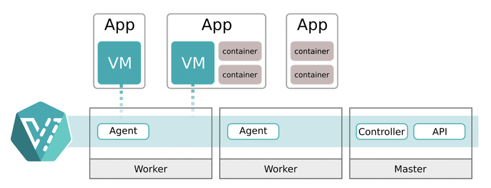
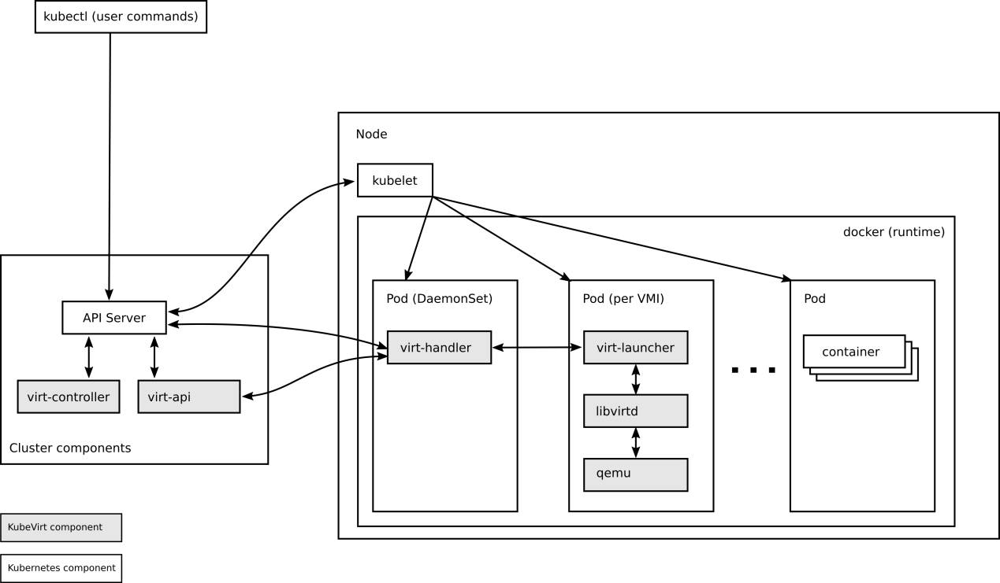
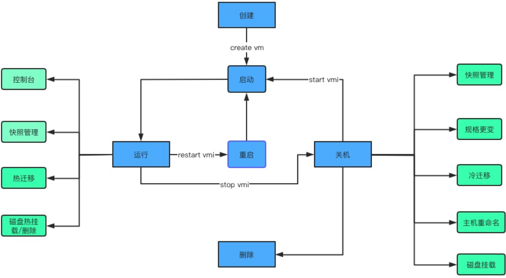
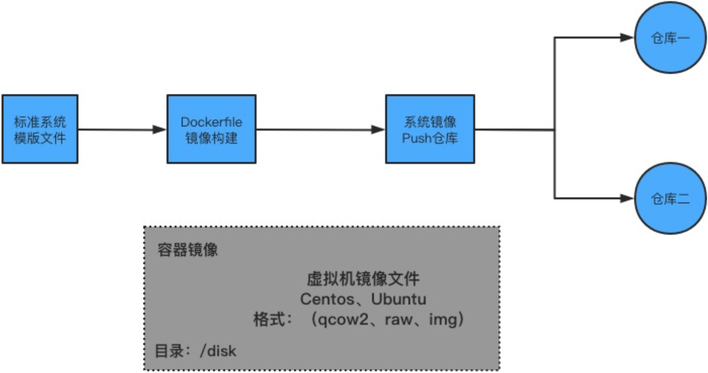

k8s：(8)kubevirt运维案例
案例描述
本案例介绍了在Kubernetes集群中实现KVM，并管理虚拟机生命周期的方法。
（1）了解KubeVirt环境的部署。
（2）了解KVM在Kubernetes集群的实现。
（3）掌握VM的生命周期管理。
规划节点
节点规划，见表1-1。
表1-1节点规划
| IP | 主机名 | 节点 |
|---|---|---|
| 10.24.2.7 | master | Master节点 |
| 10.24.2.8 | 桌面化测试节点 |
基础准备
确保Kubernetes 1.22.1集群环境已部署完成。
案例实施
KubeVirt介绍
（1）背景介绍
随着这些年容器技术和云原生技术的发展，Kubernetes在2017年容器编排大战中击败Docker Swarm和Mesos之后，进一步发展壮大。到现在为止，基本上所有公有云的容器服务（xKS服务）和私有云的容器云PaaS平台都是用的Kubernetes，Kubernetes已成为事实上的容器编排标准。从这个意义上讲，可以称Kubernetes为云原生计算的操作系统。
值得注意的是，在企业的数据中心或云平台上，大部分应用都还没有进行容器化，仍旧以传统二进制代码的方式运行在虚拟机上面。对于某些客户来讲，不希望在运营一个以管理传统虚拟机为主的IaaS平台或虚拟化平台（比如OpenStack或者VMWare）之外，同时运营另外一个基于Kubernetes的容器平台。因此，一个自然而然的想法就形成了。既然Kubernetes在容器编排领域如此成功，能不能使用Kubernetes来管一切虚拟化运行时，包含裸金属、VM、kata、容器等，实现一套调度、多种运行时，用户按需选择。
基于以上想法，业界在从OpenStack向Kubernetes转型的过程中涌现了一部分比较好的项目，例如KubeVirt、Virtlet、Rancher、VM等，但是社区活跃度最高、公认设计最好的还是KubeVirt。
KubeVirt总体架构图如图1所示

图1
（2）容器里运行虚拟机
容器里面运行的应用程序本质上是一个进程。容器技术通过采用Linux的命名空间（namespace）和控制组（cgroup）等内核技术实现进程隔离，并且可以对隔离的进程进行资源分配控制。既然容器里面真正运行的是进程，那么，如何能让在容器里面跑虚拟机呢？
在采用KVM做Hypervisor的Linux机器上，从Hypervisor的角度来看，虚拟机就是一个KVM进程。
本质上来讲，KubeVirt的虚拟化功能，除了没有直接使用virsh创建虚拟机，本质上也是采用libvirt、QEMU和KVM等同样的虚拟化核心技术来实现的，如图2所示：

图2
（3）KubeVirt的实现方式
KubeVirt充分采用了Kubernetes方式扩展了Kubernetes，主要在以下3个方面进行了扩展：
- VM相关的自定义资源CRD被增加到Kubernetes API中间。新增的CRD包括VirtualMachine、VirtualMachineInstance、VirtualMachineInstanceMigration、DataVolume等。
- 新建的虚拟机控制器，用于实现上述相关CRD在增、删、改时应该执行的相关操作。
- 每个节点上面的守护进程virt-handler，可以认为是KubeVirt的Kubelet。Virt-handler和Kubelet一起，用于创建虚拟机实例（VMI），以达到CRD中期望的状态。
KubeVirt的架构图如图3所示：

图3
Kubevirt 主要实现了下面几种资源，以实现对虚拟机的管理：
- VirtualMachineInstance（VMI）：类似于Kubernetes Pod，是管理虚拟机的最小资源。一个VMI对象即表示一台正在运行的虚拟机实例，包含一个虚拟机所需要的各种配置。
- VirtualMachine（VM）：为群集内的VMI提供管理功能，例如开机、关机、重启虚拟机，确保虚拟机实例的启动状态，与虚拟机实例是1:1的关系，类似与spec.replica为1的StatefulSet。
- VirtualMachineInstanceReplicaSet（VMIRS）：类似于ReplicaSet，可以启动指定数量的VMI，并且保证指定数量的VMI运行，可以配置HPA。
部署KubeVirt环境
检查CPU是否支持虚拟化：
1 | [root@master ~]# egrep -c 'vmx|svm' /proc/cpuinfo |
只要输出结果不为0则表示支持虚拟化。VMX和SVM都是虚拟化技术，Intel平台称为VMX–virtual machine extension；AMD平台称为SVM–Secure Virtual Machine extension。
下载软件包并导入镜像：
1 | [root@master ~]# ls |
安装KubeVirt环境：
1 | [root@master ~]# kubectl apply -f KubeVirt/manifests/kubevirt-operator.yaml |
查看KubeVirt Pod：
1 | [root@master ~]# kubectl -n kubevirt get pods |
安装KubeVirt命令行工具：
1 | [root@master ~]# cp KubeVirt/tools/virtctl-v0.56.0-linux-amd64 /usr/bin/virtctl |
虚拟机生命周期
KubeVirt虚拟机生命周期管理主要分为以下几种状态：
- 创建：创建VM对象，并同步创建DataVolume/PVC，通过调度、IP分配后生成VMI以及管理VM的Launcher Pod。
- 运行：运行状态下的VM可以进行控制台管理、快照备份/恢复、热迁移、磁盘热挂载/热删除等操作，此外还可以进行重启、下电操作，提高VM安全的同时解决业务存储空间需求和主机异常Hung等问题。
- 关机：关机状态下的VM可以进行快照备份/恢复、冷迁移、CPU/MEM规格变更、重命名以及磁盘挂载等操作，同时可通过重新启动进入运行状态，也可删除进行资源回收。
- 删除：对VM资源进行回收，但VM所属的磁盘数据仍将保留、具备恢复条件。
KubeVirt生命周期管理如图4所示：

图4
（1）创建
VM资源清单文件模板如下：
1 | apiVersion: kubevirt.io/v1 # API版本号 |
编写VM资源清单文件：
1 | [root@master ~]# vi vm.yaml |
创建VM：
1 | [root@master ~]# kubectl apply -f vm.yaml |
查看VM：
1 | [root@master ~]# kubectl get vm |
因为.spec.running字段的值设置的false，所有虚拟机的状态是Stopped，由于VM还没启动，所以目前还没有VMI资源，只有VM资源。
（2）启动
启动VM：
1 | [root@master ~]# virtctl start vm-fedora |
查看VM：
1 | [root@master ~]# kubectl get vm |
可以看到，VM的状态已经变为Running了。
查看对应的VMI：
1 | [root@master ~]# kubectl get vmi |
（3）暂停和取消暂停
暂停VM：
1 | [root@master ~]# virtctl pause vm vm-fedora |
查看暂停后的VMI状态：
1 | [root@master ~]# kubectl get vm vm-fedora -o=jsonpath='{.status.conditions[?(@.type=="Paused")].message}' |
取消暂停VM：
1 | [root@master ~]# virtctl unpause vm vm-fedora |
（4）重启VM
1 | [root@master ~]# virtctl restart vm-fedora |
（5）删除VM
1 | [root@master ~]# kubectl delete vm vm-fedora |
虚拟机运行策略
VM配置文件中的Running字段用来确定是否运行VMI。Running是一个布尔值，只能为真或假，并不总是满足用户的需求。例如，在某些情况下，用户希望能够从VM内部关闭VMI，但是使用“spec.running: true”，KubeVirt将立即重新启动VMI。
RunStrategy会根据一系列条件决定VMI的行为，作为Running的替代方案，RunStrategy为创建和管理VMI提供了更大的灵活性。Running和RunStrategy是相互排斥的，只能同时使用spec.running或spec.runStrategy之一，如果两者都存在，则会出现错误。
RunStrategy目前支持四种策略：
- Always：在创建VM时，始终会存在VMI。如果因为任何原因造成原始的VMI停止运行，则会创建一个新的VMI，这与spec.running: true的行为相同。
- RerunOnFailure：如果上一个VMI因为错误而失败，则会重新创建一个VMI。如果VM成功停止（例如VM正常关机），则不会重新创建VMI。
- Manual：KubeVirt不会尝试启动或停止VM。为了改变状态，用户必须从API调用start、stop和restart，virtctl客户端命令可以用来控制VMI的状态。
- Halted：创建VM时没有VMI，这与spec.running: false的行为相同。
Always运行策略的示例用法如下：
1 | [root@master ~]# vi vm-runstrategy.yaml |
创建VM：
1 | [root@master ~]# kubectl apply -f vm-runstrategy.yaml |
查看VM和VMI：
1 | [root@master ~]# kubectl get vm |
可以看到，VM创建后的状态为Running，对应的VMI也已运行。使用virtctl的start、stop和restart命令可以影响VM的运行策略。
表1-2显示了VM在运行virtctl命令后运行策略的变化。第一列显示了VM原始的运行策略，其它列显示运行的virtctl命令以及在运行该命令后的新的运行策略。
表1-2 VM在运行virtctl命令后运行策略的变化
| RunStrategy | start | stop | restart |
|---|---|---|---|
| Always | - | Halted | Always |
| RerunOnFailure | - | Halted | RerunOnFailure |
| Manual | Manual | Manual | Manual |
| Halted | Always | - | - |
使用virtctl工具对该VM执行stop操作：
1 | [root@master ~]# virtctl stop vm-fedora |
查看VM和VMI：
1 | [root@master ~]# kubectl get vm |
此时VMI已经消失。查看VM的RunStrategy：
1 | [root@master ~]# kubectl get vm vm-fedora -o jsonpath={.spec.runStrategy} |
可以看到，在执行“virtctl stop”命令后，VM的RunStrategy由Always变成了Halted。
删除VM：
1 | [root@master ~]# kubectl delete vm vm-fedora |
虚拟机存储卷
存储卷是启动虚拟机必不可少的部分，KubeVirt 中提供多种方式的存储卷，存储卷的使用方式非常灵活。
KubeVirt支持在spec.volumes下指定多种类型的卷：
- cloudInitConfigDrive：通过给VM挂载一个文件系统，给cloud-init提供meta-data和user-data。
- cloudInitNoCloud：通过给VM挂载一个文件系统，给cloud-init提供meta-data和user-data，生成的文件格式与ConfigDrive不同。
- containerDisk：指定一个包含QCOW2或RAW格式的Docker镜像，重启VM数据会丢失。
- dataVolume：动态创建一个PVC，并用指定的磁盘映像填充该PVC，重启VM数据不会丢失。
- emptyDisk：从宿主机上分配固定容量的空间，映射到VM中的一块磁盘，与emptyDir一样，emptyDisk的生命周期与VM等同，重启VM数据会丢失。
- ephemeral：在VM启动时创建一个临时卷，VM关闭后自动销毁，临时卷在不需要磁盘持久性的任何情况下都很有用。
- hostDisk：在宿主机上创建一个IMG镜像文件给VM使用。重启VM数据不会丢失。
- persistentVolumeClaim：指定一个PVC创建一个块设备。重启VM数据不会丢失。
- secret：使用Kubernetes的secret来存储和管理一些敏感数据，比如密码、Token、密钥等敏感信息，并把这些信息注入给VM，可以动态更新到Pod，但是不能修改Pod中生成的ISO文件，更不能更新到VM。要想更新到VM，需重启VM。
- configMap：功能类似于secret，把configMap里的信息写入到ISO磁盘中，挂给VM。
- serviceAccount：功能类似为secret，把serviceAccount里的信息写入到ISO磁盘中，挂给VM。
- sysprep：以secret或configMap的形式，往VM写入sysprep。
（1）containerDisk
KubeVirt 可以使用 ContainerDisk 类型的存储卷，ContainerDisk 提供了一种以 registry 存储和分发虚拟机镜像的方案，可以使用这种方式制作上传镜像。
虚拟机镜像制作流程如图5所示：

图5
虚拟机镜像采用容器镜像形式存放在镜像仓库中。将Linux发行版本的镜像文件存放到基础镜像的/disk目录内，镜像格式支持QCOW2、RAW和IMG。通过Dockerfile文件将虚拟机镜像制作成容器镜像，然后分别推送到不同的registry镜像仓库中。客户在创建虚拟机时，根据配置的优先级策略拉取registry中的虚拟机容器镜像。
编写Dockerfile：
1 | [root@master ~]# vi Dockerfile |
构建镜像：
1 | [root@master ~]# docker build -t cirros:v1.0 . |
使用新构建的镜像，并将ContainerDisk作为临时磁盘附加到VM：
1 | [root@master ~]# vi vmi-containerdisk.yaml |
创建VMI：
1 | [root@master ~]# kubectl apply -f vmi-containerdisk.yaml |
查看VMI：
1 | [root@master ~]# kubectl get vmi |
删除VMI：
1 | [root@master ~]# kubectl delete vmi vmi-cirros |
（2）cloudInitNoCloud
cloudInitNoCloud利用cloud-init对虚拟机做初始化，类似于nova中的configdrive，包含元数据meta-data和用户数据user-data。meta-data能实现一些固定功能设置，如主机名称，user-data则可以实现更多灵活的功能，如生成文件、执行脚本等。
如基于cloudInitNoCloud设置VMI密码：
1 | [root@master ~]# vi vmi-cloudinit.yaml |
创建VMI：
1 | [root@master ~]# kubectl apply -f vmi-cloudinit.yaml |
查看VMI：
1 | [root@master ~]# kubectl get vmi |
创建VMI的时候通过cloudInitNoCloud设置系统密码为fedora，使用该密码连接VMI：
1 | [root@master ~]# virtctl console vmi-fedora |
使用“Ctrl + ]”组合即可退出console控制台界面。
删除VMI：
1 | [root@master ~]# kubectl delete vmi vmi-fedora |
（3）emptyDisk
emptyDisk的工作原理类似于Kubernetes中的emptyDir，将创建额外的稀疏QCOW2磁盘，emptyDisk的生命周期与VMI等同。当VMI初始化重启后，数据保留下来，但当VMI重启时，数据将被丢弃。创建emptyDisk时必须提供磁盘容量大小。
例如为VMI额外创建一块2 GB大小的磁盘：
1 | [root@k8s-master-node1 KubeVirt]# vi vmi-emptydisk.yaml |
创建VMI：
1 | [root@master ~]# kubectl apply -f vmi-emptydisk.yaml |
查看VMI磁盘信息：
1 | [root@master ~]# virtctl console vmi-fedora |
可以看到VMI中挂载了一块磁盘vdb，大小为2 GB，说明emptyDisk创建成功。
使用“Ctrl + ]”组合键即可退出console控制台界面。
删除VMI：
1 | [root@master ~]# kubectl delete vmi vmi-fedora |